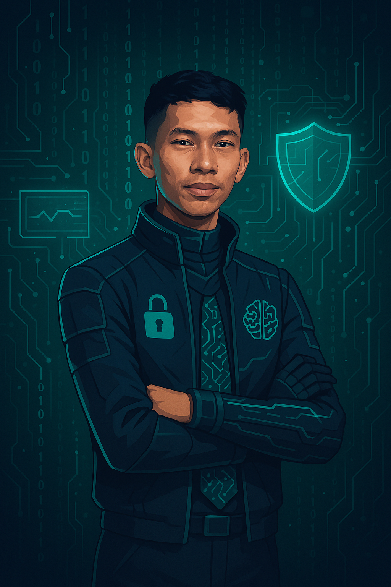

| Profil | |
|---|---|
| Nama | Ramadhan Sanjaya |
| Tanggal lahir | Indramayu,04 November 2003 |
| Pendidikan | Rekayasa perangkat Lunak, Politeknik Negeri Indramayu |
| Hobi | Olahraga,Koding,Mendengar Musik. |
| Deskripsi Singkat | Saya adalah mahasiswa aktif di Politeknik Negeri Indramayu, jurusan Teknik Informatika dengan program studi Rekayasa Perangkat Lunak. Saya memiliki minat besar dalam pengembangan perangkat lunak dan keamanan siber, serta berkomitmen untuk terus belajar dan berkembang di dunia teknologi. |